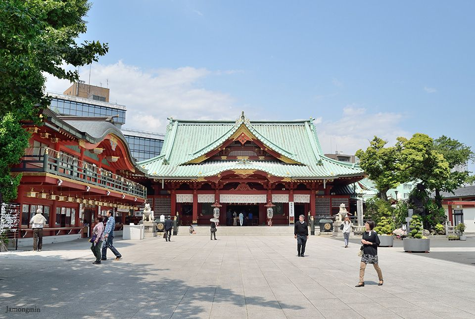

에도 총진수 칸다 신사 (칸다묘진) in 도쿄도 치요다구


2020.06.25 Posted
"에도(江戸)의 수호신"
근처에 있는 전자 상점가・아키하바라와는 대조되는 분위기를 한 차분한 신사입니다. 1300년의 역사를 가졌으며 전국시대 무사들과, 에도시대의 참근교대(参勤交代, 에도 막부가 다이묘들을 교대로 일정한 기간씩 에도에 머무르게 한 제도, 산킨코다이)로 찾아온 다이묘들로 부터도 많은 신앙을 받았다고 합니다. 아름다운 주홍색 본전은 관동 대지진과 도쿄 대공습 때도 견뎌낸, 칸다 묘진의 상징적 존재입니다.
현지에서는 칸다묘진이라는 명칭을 좀 더 자주 쓰는 편입니다. 도쿄 한가운데 있고 외국인이나 내국인들에게 잘 알려진 신사인데도 다른 관광지와 비교하면 분위기가 대체로 조용한 편이죠. 참고로 덴진 마츠리, 기온 마츠리와 더불어 일본 3대 마츠리인 칸다 마츠리가 열리는 곳도 바로 이곳. 매년 5월 15일 기준으로 거행하는데, 짝수 해보다는 홀수 해에 행사를 크게 열립니다.
주변 역 명 : 아키하바라 역 / JR 야마노테 선, JR 게이힌토호쿠 선, JR 주오 쇼부센 카쿠테 선, 히비야 선, 사자나미, 와카시오, 쓰쿠바 익스프레스 선